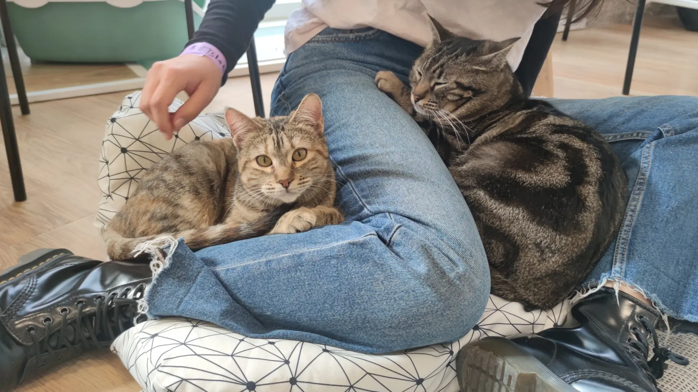
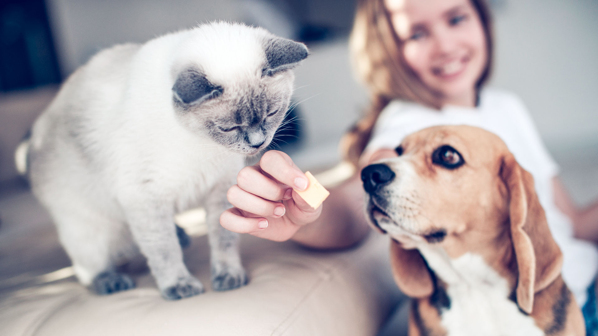

Huellas de Esperanza
Rescatamos perros y gatos en situación de abandono para brindarles una nueva oportunidad.
Conocé nuestra historia¿Quiénes somos?
En Huellas de Esperanza somos una ONG dedicada al rescate, cuidado y adopción responsable de perros y gatos en situación de abandono. Nuestro objetivo es brindarles refugio, alimento, atención veterinaria y una nueva oportunidad de encontrar una familia.


¿Cómo ayudar?

En Huellas de Esperanza estamos comprometidos con el bienestar de los animales en situación de calle y maltrato. Si quieres colaborar con nosotros, hay varias formas en las que puedes hacerlo: donar alimento, artículos para mascotas, participar como voluntario o brindar un hogar temporal.

Nuestra misión
En Huellas de Esperanza creemos que todos los animales merecen amor, cuidado y una segunda oportunidad. Nuestra misión es rescatar perros y gatos en situación de abandono, brindarles un refugio seguro, atención veterinaria y acompañarlos hasta encontrar una familia responsable.